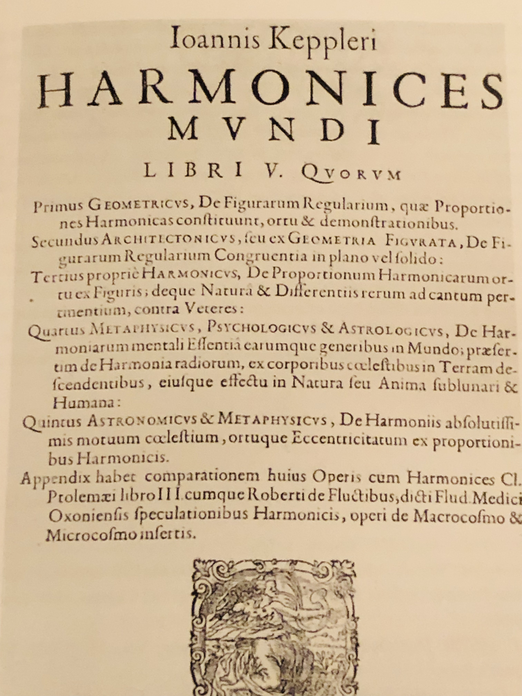
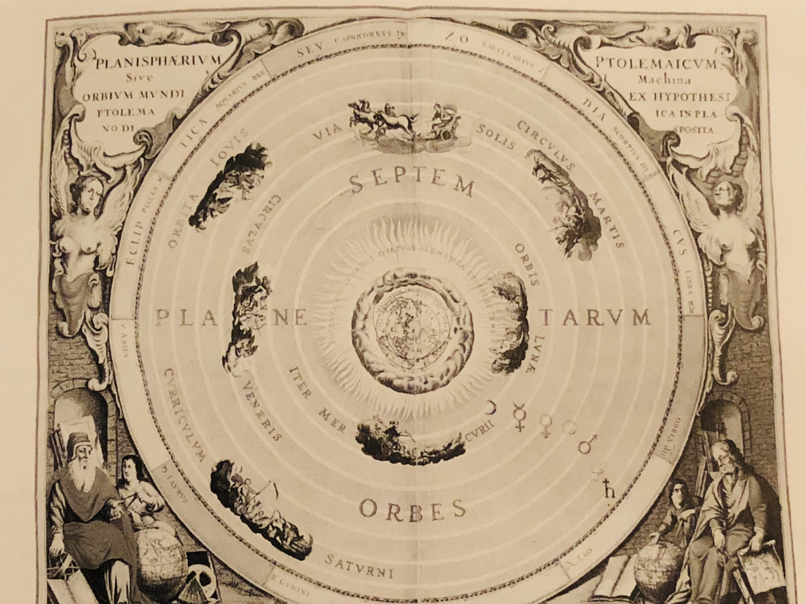
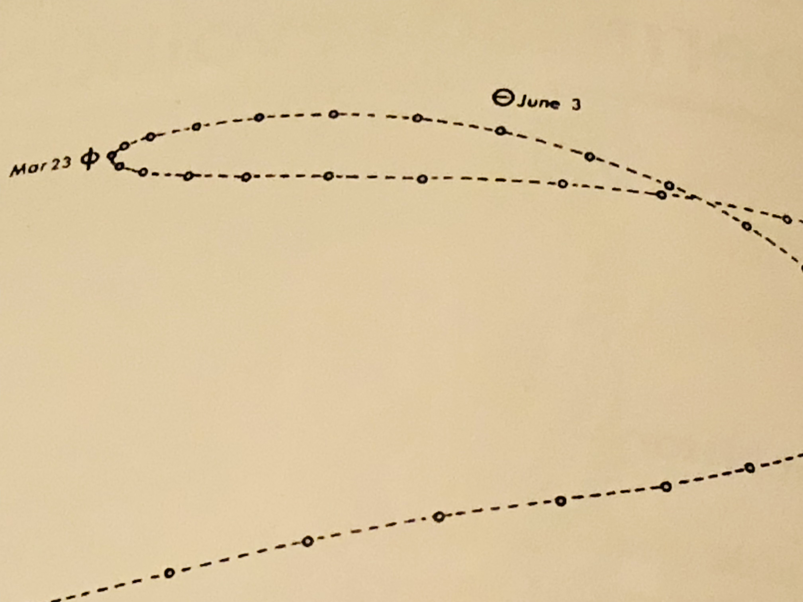
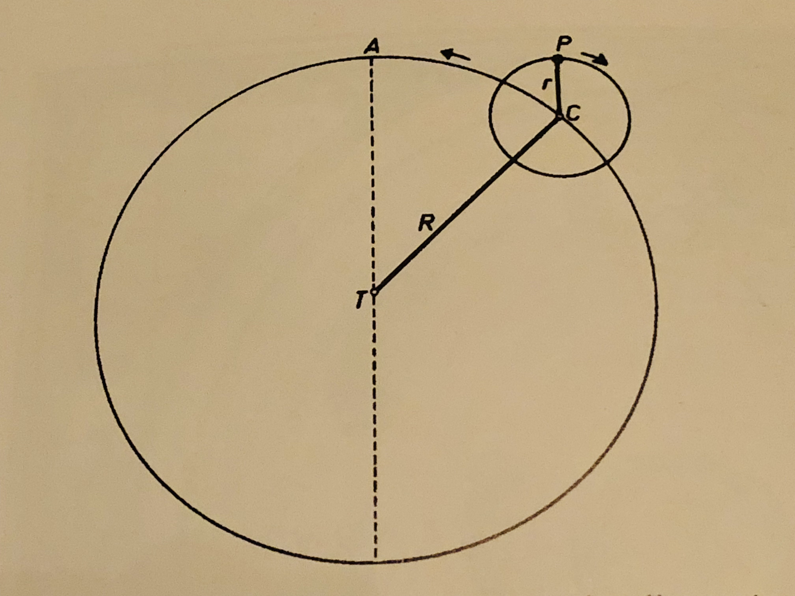
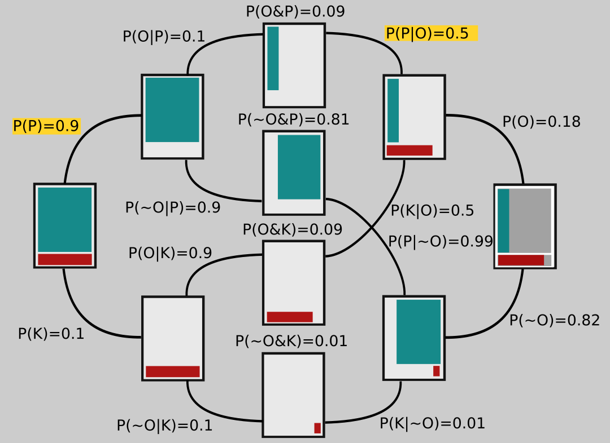
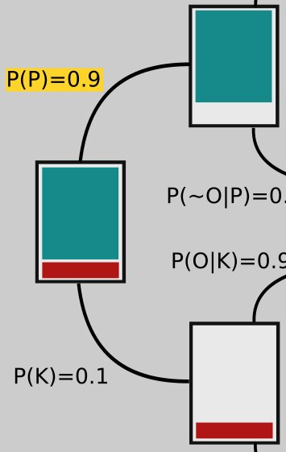
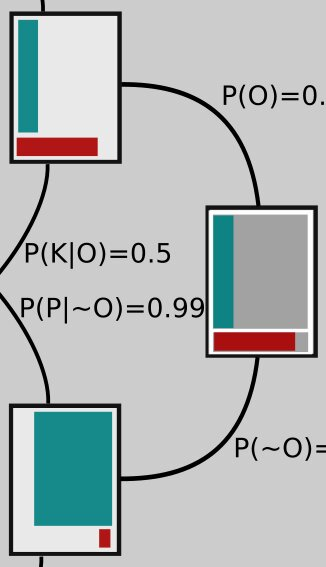
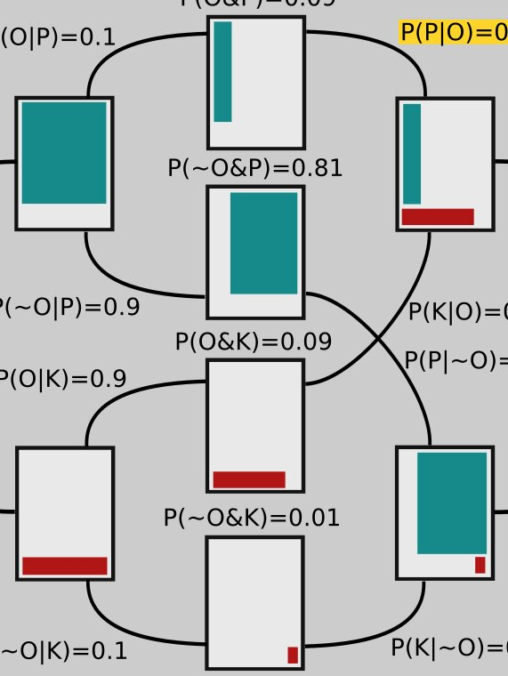
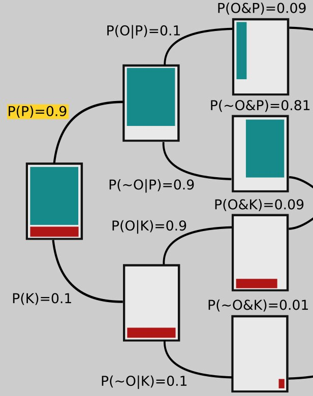
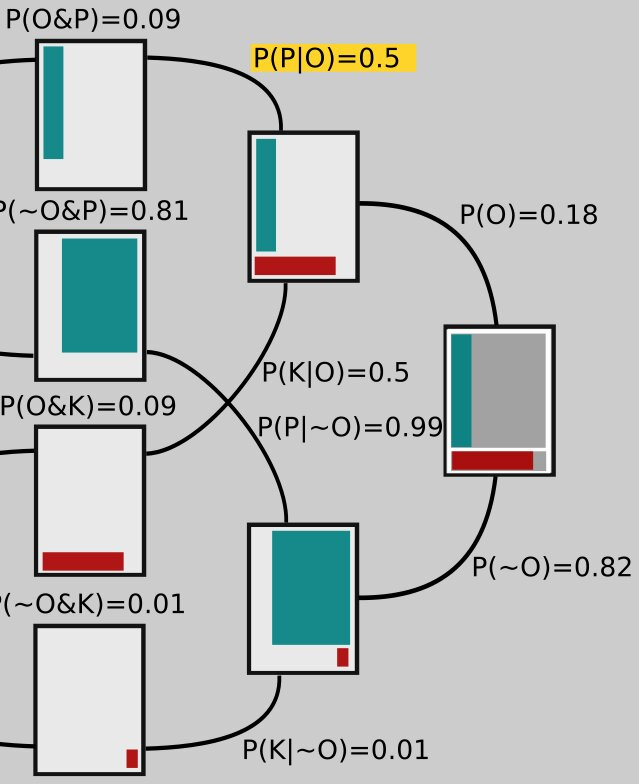

a graphical approach to bayes' theorem using trees
Written on

In this article I'd like to illustrate an intuitive graphical approach to using Bayes' equation, which itself is a tree diagram. As a concrete example, let's suppose you are, for some strange reason, being taught science in chronological order. You've learned all about the Ptolemaic model, which places Earth in the center of the universe; you haven't gotten to anything later yet, so this is the correct model as far as you know.
To make this imaginative exercise easier, let's take a moment to consider why the Ptolemaic model was at one time as persuasive as it was.
- If you look up at the north pole, all the other stars in the sky seem to make one full circle around it every 24 hours, giving the impression that the whole universe is like a great big hollow sphere with little glowing dots painted on the inside of it, which rotates as the Earth sits motionless at its center.
- We could say that Earth is what's rotating instead, but it would have to rotate such that we would be traveling at 1,000 mph! Wouldn't we notice that? Why don't we fly off into space, like water flies off a spinning umbrella?
- The idea of the Earth moving around the Sun seems crazy for similar reasons: If it's flying through space, why don't we fall off and get left behind?
Hopefully it's a little clearer now why you might believe that the universe looks like the ancients thought it did (except for Aristarchus, the great ancient astronomer who got it right, putting the sun in the center).

There is still a problem for this model when it comes to the planets. If you watch a planet for long enough as it travels through the night sky, its path will double back on itself, as shown below.

It's impossible to obtain a trajectory like that if the planets simply travel in circles around the Earth. In fact, the word "planet" comes from a Greek word meaning "wanderer," because the planets seem to wander aimlessly compared to the stars. One way of solving this problem is to introduce epicycles: The planet moves on the rim of a circle, the epicycle, and the center of the epicycle moves in a circle around the Earth. The planets-on-epicycles construction can reproduce the periodic, wandering retrograde motion that we observe.

Now we fast forward from the ancient Greeks to the 17th century. The astronomer Tycho Brahe has made many measurements of the positions of the known planets as they move through the sky, and they say he's done it with unprecedented accuracy! Furthermore, a mathematician named Johannes Kepler has analyzed the data and determined that the simplest way to represent planets' motion is... to have all of them, including Earth, move along ellipses that have the sun at one focus!
Furthermore, Galileo has discovered the law of inertia: That the natural state of motion for an object is not to slow down and remain at rest, but to keep moving in the same direction at a constant speed. Just like, if you drop a ball while you're standing inside a train traveling on a straight track at a constant speed, it will fall straight toward your feet and not backward, in the same way we can travel along with the Earth as it flies through space without being left behind.
So we have some belief updating to do! Let's represent the relevant claims with letters:
\(P =\) The Ptolemaic system is the correct model
\(K =\) Kepler's system is the correct model
To keep things simple, we'll also suppose that one or the other of these has to be true, so if we write \(\sim P\) to mean "\(P\) is not true," we can also write \(\sim P = K\): If the Ptolemaic system isn't right, then Kepler's is (and vice versa). Also, let's write \(P(C)\) to mean "the probability of claim \(C\)" and \(P(C|E)\) to mean "the probability of claim \(C\) given evidence \(E\)."
So initially we have a degree of confidence that Ptolemy's model is correct, which with our notation we can write as \(P(P)\), and likewise \(P(K)\) is our initial probability that Kepler's model is correct. These probabilities are called "priors" because they represent our confidence before any new pieces of evidence (or observations) become available to us. We can represent the new observations as:
\(O =\) Tycho Brahe has made very many precise observations that Kepler says can be modeled more simply with his framework; Galileo has discovered the law of inertia
We're interested in \(P(P|O)\) and \(P(K|O)\), the probabilities for each model given the new observations. Our initial confidence in the Ptolemaic model, before the new evidence is introduced, is probably pretty high, say \(P(P) = 0.9\); since the only other possibility is Kepler's model being correct, we have \(P(K) = 0.1\) (the two probabilities have to sum to 1).
We can represent this state of affairs in the rectangle on the far left in the tree-like figure below: 90% of that rectangle is shaded green; that part represents our confidence in P. The other 10% is shaded red, corresponding to our initial confidence that K is correct.

Branching off of that rectangle are two others, which each represent different possible epistemic universes: In the upper one, the Ptolemaic model is correct; in the lower universe Kepler's turns out to be right. Notice that the branches going to these rectangles are labeled with their respective probabilities, 0.9 and 0.1.

Now let's look at the opposite side of the figure on the far right. To shade in this rectangle (which has gray shaded regions matching the one on the left that we started with), we have to ask ourselves about P(O|P) and P(O|K), the probabilities that the observations are correct in the different universes, one in which Ptolemy is right and the other in which Kepler is right. After all, maybe Tycho Brahe took all his observations while drunk and wrote the numbers down wrong, or maybe he made some kind of measurement error, or maybe Kepler's math is wrong!

The proportion of red in the bottom part of the rectangle represents \(P(O|K)\), the probability that the observations are correct in the universe where the planets do move, in fact, the way Kepler describes. It would be pretty unlikely that Brahe or Kepler made serious mistakes and yet the planets move on ellipses anyway! So we set \(P(O|K) = 0.9\) (we would probably set it even higher, but let's keep the numbers nice and simple). The shaded red region is meant to take up 90% of the area in the bottom part of the rectangle; I drew it a little larger for clarity.
The green shaded region of upper portion of the rectangle represents \(P(O|P)\), the probability that the observations are correct, but that Ptolemy's model is the correct one anyway. How might that happen? It turns out that if you add some extra epicycles - that is, make the planets travel on circles that are on circles, which then move around the Earth - you can get them to appear to move in the night sky just as Brahe's measurements indicate.
Of course then that model starts to look clunky, so maybe we think that's not too likely to be correct. Let's set \(P(O|P) = 0.1\), then. If we imagine tiling the top part of the rectangle with 10 vertical strips, the green is just one of those strips, again drawn a bit larger than it would really look, for clarity.
The two rectangles branching off toward the left from the one on the far right represent a universe in which the observations are correct (top branch) and one in which they are not (bottom branch).
Now let's look more closely at the middle rectangles. They show the overlap between the ones on each side, the area they have in common. For example, the middle top rectangle has the green area that's in common between the rectangle connected to its left and the one connected to its right side; the middle rectangle second from the top contains green that represents the overlap between the two green areas in the rectangles to which it's connected, and so on.

So far I haven't explained a lot of the numbers in the diagram. We start on the left, and use those numbers to get the ones on the right. The branch leading from the second upper rectangle to the upper middle one is labeled \(P(O|P)=0.1\). We are given that \(P\) is true (remember, this branch represents a universe in which \(P\) is true!) and are considering the probability that the observations are correct. This is precisely the probability that we represented on the far right rectangle by shading in 10% of its upper part. And here you can see that the thin green strip on the middle rectangle is 10% of the area of the one attached to its left.

Similarly, the green in the middle rectangle second from the top is 90% of the area of the green in the rectangle connected to its left side, so that branch is labeled \(P(~O|P) = 0.9\). Notice that
and that's generally the case: The sum of two branches coming from the same rectangle must add up to 1.
The probabilities on the tops of the middle rectangles are joint probabilities. For example, to get to the top rectangle, two things must happen: Ptolemy's model has to be correct, \(P(P)=0.9\), and then the observations have to be correct, given Ptolemy's model being correct, \(P(O|P) = 0.1\). So the probability of both these things happening is their product:
The other numbers along the middle are arrived at similarly. Now let's look at the right hand side again.

The number on the upper branch coming from the far right rectangle is obtained by adding up the numbers on top of the rectangles that it ultimately connects to in the middle. That is,
Similarly,
Notice these two branches, since they both lead off the same rectangle, sum to 1: 0.18 + 0.82 = 1.
Now what about the number in yellow, \(P(P|O)\)? We get that one by noting that the number on the top of the middle rectangle has to be \(P(O)P(P|O)\), just like on the left side it was \(P(P)P(O|P)\). So if we call that yellow number \(x\), we have \(P(O)x = P(O\And P)\) or \(0.18x = 0.09\). Solving this equation for x gives \(x = 0.09/0.18 = 0.5\). The other numbers on those branches are obtained the same way. For example, if we use a \(y\) to represent the value on the bottom, labeled \(P(K|~O)\), we need to have \(P(~O)y = P(~O\And K)\) or \(0.82y = 0.01\), so that \(y = 0.01/0.82 = 0.01\).
So we started with confidence \(P(P)=0.9\), but after all that new science we find ourselves at \(P(P)=0.5\): We're not so sure anymore!
It may seem like a lot, but once you get used to it, it doesn't take long to draw up a Bayes tree and think through your confidence update for a claim, given new evidence.